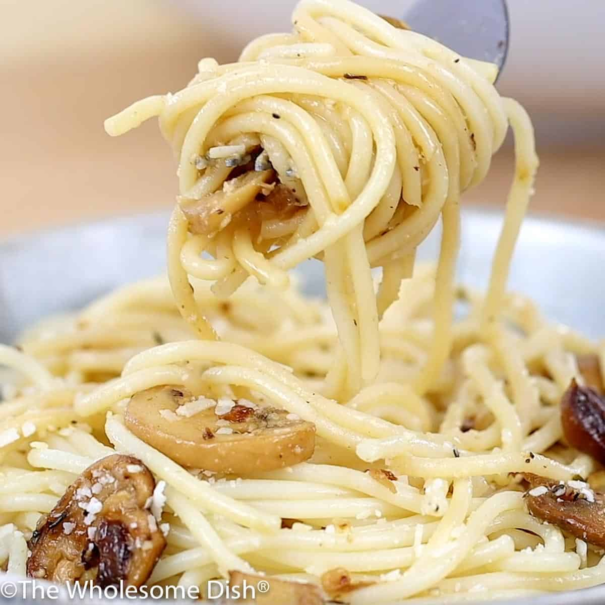

Chicken parmesan Sloppy Joes

Description:
Easy Mushroom Pasta comes together in minutes. Spaghetti is coated in a simple sauce made from seasoned sautéed mushrooms and parmesan cheese.
Ingredients:
- 8 ounces Spaghetti
- 4 Tablespoons unsalted butter
- 2 Tablespoons olive oil
- 16 ounces white mushrooms sliced
- 2 garlic cloves minced
- 1/2 teaspoon dried thyme leaves
- 1 teaspoon salt
- 1/4 teaspoon ground black pepper
- 1/4 cup grated Parmesan cheese
Steps:
- Cook the pasta according to its package directions. Before draining the pasta, reserve one cup of the starchy cooking water.
- As the pasta cooks, make the mushroom sauce. Place a large skillet over medium-high heat. Add the butter and olive oil. Once the butter is melted, add the mushrooms. Cook for five minutes, stirring occasionally.
- Add the onions to the skillet. Cook for five minutes, stirring occasionally, until the onions are soft and the mushrooms are dark.
- Add the garlic, salt, time, and pepper. Cook for two minutes, stirring often.
- Remove the skillet from the heat. Slowly and carefully add ¼ cup of the reserved water. Stir and scrape up any brown bits from the bottom of the skillet.
- Add the mushrooms and the Parmesan cheese to the cooked and drained pasta. Stir well.
- If the pasta looks a little dry, add more cooking water.